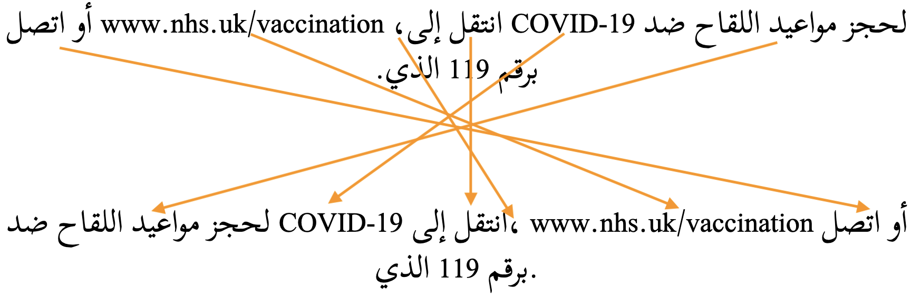
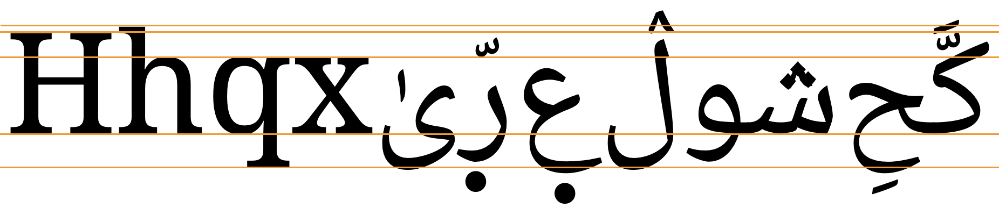
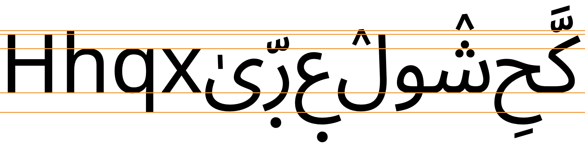

This page brings together basic information about the Arabic script and its use for the Adamawa Fulfulde variant of the Fula language. It aims to provide a brief, descriptive summary of the modern, printed orthography and typographic features, and to advise how to write Fulfulde using Unicode.
The orthography described is largely reliant on Scott Clark's description for SIL in 2007,sc and relates to usage for Nigeria, Cameroon, Chad, and the Central African Republic.
Note: Due to the difficulty in finding lists of Fulfulde Ajamiya words that are associated with IPA pronunciations, most of the examples shown here show the equivalent Latin spelling as the transcription. In a small number of cases, IPA transcriptions were generated from that.
Fulfulde can be written in the Latin script, but also (less commonly) using the Arabic ajami script. Use of ajami tends to be restricted to Muslim contexts.
The Arabic script was introduced to Africa between the 10th to 16th centuries, and was the precursor to many Latin orthographies in pre-colonial times. Different languages have developed slightly different implementations of the Arabic script, and often the usage is not fully standardised. The Arabic language, being Semitic, is built on consonant patterns and therefore usually omits vowel diacritics and gemination marks, but African languages typically need to show all diacritics, including some additional marks to represent their full phonetics.
In 1998, at the JCMWA/MICCAO conference in Ngaoundéré, Cameroon, over 100 representatives from 14 West African countries agreed that the orthography described here would be a good standard for writing the Fulfulde language with Arabic script (called Ajamiya).sc
For information about the script in general, see the Arabic overview.
The Arabic script is commonly used as an abjad, which means that in normal use the script represents only consonant and long vowel sounds. However, since Fulfulde Ajamiya normally shows all the vowel diacritics, it actually functions as an alphabet. See the table to the right for a brief overview of features for Fulfulde using the Arabic script.
Fulfulde is written right to left in horizontal lines, but numbers and embedded Latin text are read left-to-right.
Letters are joined (cursive) as is usual for the Arabic script. There is no case distinction. Words are separated by spaces.
The orthography for Fulfulde described here has 22 basic consonants. 8 more consonants are applied to write Arabic loan words or names from the Qur'an.
Fulfulde has prenasalised consonants, but they are spelled out using normal consonant letters (as in the Latin orthography). Doubled consonants are indicated using the diacritic 0651.
Fulfulde is an alphabet where vowel sounds are written using a mixture of combining marks and letters. Unlike Semitic languages such as Arabic that build words on consonant patterns and so normally hide vowel diacritics in the Arabic script, it can be difficult to read Fulfulde text without the full vowel information, and therefore Fulfulde retains all vowel diacritics in the text. Fulfulde has more vowel sounds than Arabic, so additional diacritics are used to write those.
The way a given vowel is written depends on its joining behaviour (initial, medial, or final). In some cases a vowel is written using just a diacritic, in others it is via combinations of letters and diacritics. Most of the letters also double as consonants. 8 combining marks are used to write vowels, and 6 letters, only 1 of which is a dedicated vowel letter.
Standalone vowels are written by adding vowel characters to ع, rather than the alef used for the Arabic language, apart from a small number of exceptions for Arabic loans or names from the Qur'an.
Vowel absence is indicated using the diacritic 0652.
Fula uses a mixture of punctuation from the ASCII, Arabic and other ranges.
Joining forms
Because the Arabic script is 'cursive' (ie. joined-up) writing, letters tend to have different shapes depending on whether they join with adjacent letters or not (see cursive). In addition, vowels can be represented using different characters, depending on where in a word they appear.
In scripts such as Arabic, several characters have no left-joining form. In what follows we'll use the characters ي and د to illustrate shapes. The former can join on both sides, but the latter can only join on the right.
Left-joining glyphs are commonly called initial; dual-joining are called medial; and right-joining are called final. Glyphs that don't join on either side are called isolated. However, these glyph shapes can be found in various places within a single word.
Word-initial characters usually have initial glyph shapes (eg. 064A ). However, characters that only join to the right will use an isolated glyph shape (eg. 062F ).
Furthermore, words beginning with a vowel are always preceded by a vowel carrier, which is normally ا
(eg. 0627 06CC or 0627 064E ).
Word-medial characters will typically join on both sides
(eg. 064A ) but those that only join to the right will use a final glyph (eg. 062F ).
However, if either of those is preceded by another character that only joins to the right, the glyph shapes rendered will be initial (eg. 064A )
and isolated (eg. 062F ), respectively.
Word-final characters will typically use a final glyph shape (eg. 064A and 062F ).
However, if the previous character joins only to the right, they will use isolated glyph shapes (eg.064A and 062F ).
In all this contextual glyph shaping the basic shapes used for a character can vary significantly in a script like Arabic. This also includes some characters that only have ijam dots in certain contexts.
Character index
Letters
Show
Basic consonants
ب␣ت␣ج␣ح␣د␣ر␣س␣ش␣ط␣ع␣غ␣ل␣م␣ن␣ه␣ي␣ڢ␣ک␣ی␣ݠ␣ࢡ␣ࢨ␣ࢩ
Consonants in loan words
ء␣أ␣إ␣ث␣خ␣ذ␣ز␣ص␣ض␣ظ␣ق
Vowels
ا␣و␣ى
Combining marks
Show
Vowels
َ␣ُ␣ِ␣ٰ␣ٜ␣ٛ
Other
͏␣ّ␣ْ
Loan words
ٔ␣ٕ
Numbers
Show٠␣١␣٢␣٣␣٤␣٥␣٦␣٧␣٨␣٩
Punctuation
Show«␣»␣،␣؛␣؟␣⸫␣‑␣–␣—␣…
ASCII
!␣(␣)␣.␣:␣%␣-␣[␣]
Other
Show␣␣␣␣␣␣␣␣␣␣␣
Character lists show:
Phonology
These are sounds for the Fula language in text written with the Fulfulde orthography.
Click on the sounds to reveal locations in this document where they are mentioned.
Phones in a lighter colour are non-native or allophones.
Vowel sounds
Plain vowels
Whether the script is Adlam, Latin, or Arabic, the sources of information found for Fula don't provide a great deal of clarity around the precise phonetic pronunciation of the vowel sounds, and, unfortunately, there is no IPA-transcribed data in Wiktionary to help clarify actual pronunciation.
Most sources simply transcribe all vowel sounds as a i e o u, which are the phonemically distinct vowels. However, some sources make a distinction in their transcriptions between short vowels pronounced ɪ ʊ ɛ ɔ a, and long vowels pronounced iː uː eː oː aː.
Furthermore, the phonetic sounds of a vowel may be influenced by the following consonant.lhs
Examples in this page are drawn from various sources, and may or may not use broad phonemic or narrow(er) transcriptions.
Diphthongs
Fula/Fulfulde diphthongs are all vowels followed by a -j or a -w glide. They include the following.mhm
iw
uj
eyew
ojow
ajaw
uj doesn't occur in word-final position.mhm,28
Consonant sounds
labial
alveolar
post-alveolar
palatal
velar
glottal
stop
pb
td
t͡ʃd͡ʒ
kɡ
ʔʔʲ
pre-nasalised
ᵐb
ⁿd
ᶮd͡ʒ
ᵑɡ
implosive
ɓ
ɗ
fricative
f
sz
h
nasal
m
n
ɲ
ŋ
approximant
w
l
j
trill/flap
rɾ
Fula is reported to be one of only 3 languages that contrast prenasalized consonants and their corresponding clusters (eg. ᵐb versus mb).@Wikipedia: Prenasalized consonant,https://en.wikipedia.org/wiki/Prenasalized_consonant
Observation: A few sources mention a letter that represents the sound ɠ, found in Guinea, and written in the Latin orthography with the same symbol (though previously written using q). No examples of this sound have been encountered in my research.
Tone
Languages in the Atlantic group of the Niger-Congo family, of which Fula is one, are unusual in that they are not tonal.
Structure
Fula has 2 regular syllable types: CV and CVC, where V can be a short or long vowel, and an initial C may be a glottal stop. Only a small number of sounds can occur as a coda, and closed syllables are much less common than open ones.
The distinction between long and short vowels is phonemically distinctive.
Consonant clusters only occur where a syllable follows a closed syllable. Gemination is, however, a distinctive feature.
A syllable can only contain a single vowel.lhs
Vowels
Vowel summary table
The following table summarises the main vowel to character assignments.
Each table cell shows word-initial, word-medial, and word-final forms from right to left. The glyphs shown are illustrative; alternative shapes may occur (see joining_forms). Click/tap on items to see a list of the components for that cell.
iعِ◌ِ◌ِ iːعِي◌ِي◌ِي
uعُ◌ُ◌ُ uːعُو◌ُو◌ُو
eعٜ◌ٜ◌ٜ eːعٜىٰ◌ٜىٰ◌ٜى
oعٛ◌ٛ◌ٛ oːعٛو◌ٛو◌ٛو
aعَ◌َ◌َ aːعَا◌َا◌َا
Basic Fulfulde vowels.
In word-initial position vowels are attached to a consonant letter which acts as a vowel carrier (see standalone). Otherwise, unlike orthographies for languages such as Arabic and Urdu, the characters used to represent a vowel are normally the same, regardless of the position within a word. The one exception is the word-final eː, which breaks the regular pattern by dropping the superscript alef.
Note that eː is written using ى, rather than ي.
The following is the set of characters needed to write vowels, as described in this section, grouped by general category.
ء␣ا␣ع␣و␣ى␣يَ␣ُ␣ِ␣ٰ␣ٕ␣ٜ␣ٔ␣ٛ
Post-consonant vowels
Vowels that follow consonants are written using a mixture of combining marks and letters. Vowel diacritics are not hidden.
The way a given vowel is written depends on its joining behaviour (initial, medial, or final). In some cases a vowel is written using just a diacritic, in others it is via combinations of letters and diacritics. Most of the letters also double as consonants. 8 combining marks are used to write vowels, and 6 letters, only 1 of which is a dedicated vowel letter.
Combining marks used for vowels
Fulfulde uses the following combining characters for vowels.
َ␣ُ␣ِ␣ٛ␣ٜ␣ٰ␣ٔ␣ٕ
0670 is never used alone, and is one of 2 diacritics used to write eː (in initial and medial forms only).
The diacritics 0654 and 0655 are only used where إ and أ are decomposed. Since the latter characters are themselves only used for a few borrowed names or words, these diacritics are very rare.
Vowel letter, alef maksura
ى
ى is the only dedicated letter used for writing vowels in Fulfulde, but it is only used in combination with other diacritics to write the sound eː.
Word initially and medially, eː is written ٜىٰ. Word-finally, the ٰ is dropped.
عٜىٰنغتُغٛ
بٜى
Consonant letters used for vowels
Fulfulde uses the following consonant characters to write vowels in combination with diacritics.
ا␣ع␣و␣ى␣ي␣ء
In a standard Arabic orthography some of these characters would be regarded as matres lectionis, but since Fulfulde shows all vowel diacritics they don't have the same role here. Instead, they form part of a composite that distinguishes one vowel from another (see compositeV).
ى is actually not used as a consonant in Fulfulde, and is only used for the sound eː.
ع and sometimes ا, and rarely ء are used as vowel carriers (see standalone).
Diphthongs & glides
Diphthongs ending with -i follow the initial vowel diacritic with يْ.
يَيْنَنغٛ
Diphthongs ending with -u follow the initial vowel diacritic with
وْ.
جَوْدِ
Vowel length
ي␣و␣ࢨ␣ا
Vowel length is indicated by adding one of the above letters after the vowel diacritic. For details, see the table at basicV.
These letters don't carry any diacritic, except for eː, where non-final positions use ىٰ.
بِرِيجِ
يٜىٰطُغٛ
Multipart vowels
The 6 multipart vowels listed here all indicate long versions of the vowels. The vowel diacritic is followed by a letter (and in one case another diacritic). Diphthongs and glides are not included here.
Click on the letters for examples.
ِي␣ُو␣ٜىٰ␣ٜى␣ٛو␣َا
Standalone vowels
Standalone vowels in Fulfulde normally use ع followed by the relevant vowel characters.
عَسَرْ
مٛعّٜرٜ
Occasionally, loan words or names from the Qur'an will use ا, أ, or إ as the vowel carrier, which are conventional ways of writing the standalone vowels in Arabic. ء may also be used.
إِبْرَاهِيمَ
الْمَسِيحُ
ءَادَمُ
Vowel absence
ْ
Fulfulde uses 0652 to indicate that there is no vowel after a consonant. Vowel absence is usually marked (unlike Standard Arabic), including over the YEH or WAW that signal the final part of a diphthong, and at the end of a word.
غِلْطِ
لٜࢩٛلْ
Exceptions are letters used to lengthen vowels and nasal letters indicating prenasalisation. This provides a simple way to tell the pronunciation of the relevant sequences.
نٛوغَسْ
ندِيَمْ
Vowel sounds to characters
This section maps Fulfulde vowel sounds to common graphemes in the Arabic orthography.
The columns run right to left and indicate typical word-initial, word-medial, and word-final usage. The joining forms shown are illustrative; alternative shapes may occur (see joining_forms).
Click on a grapheme to find other mentions on this page (links appear at the bottom of the page). Click on the character name to see examples and for detailed descriptions of the character(s) shown.
Plain vowels
i
0650
لٜکِّ
0650
کِرْکٜ
0639 0650
عِتُّغٛ
iː
0650 064A
ࢡِي
0650 064A
بِرِيجِ
0639 0650 064A
عِينَاطٛ
u
064F
ݠُشُّ
064F
وُجَاغٛ
0639 064F
عُرْدِ
uː
064F 0648
ڢُو
064F 0648
مِحُووِ
0639 064F 0648
عُورْغٛ
e
065C
دٜڢْتٜرٜ
065C
جٜمَّ
0639 065C
عٜنْطَمْ
eː
065C 0649
065C 0649 0670
رَنٜىٰرٜ
0639 065C 0649 0670
عٜىٰنغتُغٛ
o
065B
حٛکُّغٛ
065B
دٛکَّلْ
0639 065B
عٛݠّٜرٜ
oː
065B 0648
بٛو
065B 0648
کِيتٛووٛ
0639 065B 0648
عٛورُغٛ
a
064E
رٜىٰتَ
064E
عَسَرْ
0639 064E
عَلْکَوَلْ
aː
064E 0627
ندَا
064E 0627
نَانٜ
0639 064E 0627
Diphthongs
aj
064E 064A 0652
064E 064A 0652
يَيْنَنغٛ
aw
064E 0648 0652
064E 0648 0652
جَوْدِ
Consonants
Consonant summary table
The following table summarises the main consonant to character assigments.
The consonants in the right column include letters used for Arabic loan words and names from the Qur'an, but not usually used for native Fulfulde text. In some cases, Fulfulde text may substitute basic Fulfulde letters for these.
These consonants are a basic set used for the native Fulfulde orthography.
ݠ␣ب␣ࢡ␣ت␣د␣ط␣ک␣غ␣ع␣ش␣ج␣ڢ␣س␣ح␣م␣ن␣ࢩ␣و␣ر␣ل␣ي␣ࢨ
Some sounds are represented by combinations of characters. The trilled r is written رّ.
تٛرَّاغٛ
The sound ŋ is written as the combination نغ. That combination is also used to indicate the prenasalised sound ᵑɡ. See prenasalised for other prenasalised combinations.
نغَرٛلْ
نغَيْنَاکَ
Other consonants
Arabic loan words and names from the Qur'an may be written with addtional letters shown below, but they are not usually used for native Fulfulde text. In some cases, Fulfulde text may substitute basic Fulfulde letters for these.
ذ␣ز␣ظ␣ث␣ص␣خ␣ق␣ه
Onsets
Word-initial consonant clusters are not common in Fulfulde, with the exception of those involving prenasalisation.
Prenasalised consonants
Fulfulde has the following prenasalised consonants. They are simply written using a sequence of letters, in both the Arabic and Latin orthographies. Note that there is no sukun over the initial nasal letter; this distinguishes the prenasalised sound from a consonant cluster.
مب␣ند␣نغ␣نج
مبَرُغٛ
نجَارٜىٰندِ
Finals
ْ
Syllable- and word-final consonants are written as a normal consonant with 0652 above.
عَلْکَوَلْ
The syllable-final sukun also distinguishes nasal phonemes from prenasalised sounds (see prenasalised), and diphthongs from long vowels (see diphthong).
دِمْبَاغٛ
جَوْدِ
Consonant clusters
Consonant clusters are written by adding 0652, over the consonant letters that are not followed by a vowel.
جَرْنٜ
دٜڢْتٜرٜ
Consonant length
ّ
Geminated consonants are indicated using 0651.
دٛکَّلْ
جٜمَّ
Consonant sounds to characters
This section maps Fulfulde consonant sounds to common graphemes in the Arabic orthography. Sounds listed as 'infrequent' are allophones, or sounds used for foreign words, etc.
The right-hand column shows the various joining forms.
Click on a grapheme to find other mentions on this page (links appear at the bottom of the page). Click on the character name to see examples and for detailed descriptions of the character(s) shown.
Joining forms
p
0760
ݠُکَرَاجٛ
جِݠَّاغٛ
سَݠّٛ
لٛوݠٜ
076007600760 ⏴
b
0628
بَاوْطٜ
دِمْبَاغٛ
نجَابٜ!
062806280628 ⏴
ɓ
08A1
ࢡَندُ
حَࢡْرٜ
ࢡِࢡّٜ
حُووٛوࢡٜ
08A108A108A1 ⏴
t
062A
تٜدُّنغَلْ
نَسْتُغٛ
غِتٜ
062A062A062A ⏴
t͡ʃ
0634
شٜىٰدٜ
عَشُّغٛ
مِحٛوشِ
063406340634 ⏴
d
062F
دُولٜ
سُجِدَنغٛ
062F062F ⏴
0636
ضَرُورَ
063606360636 ⏴
d͡ʒ
062C
جِݠَّاغٛ
يٜجِّتُغٛ
سٛوبَاجٛ
062C062C062C ⏴
0630 in some Arabic loan words.
ذَمْبَ
کَذَ
06300630 ⏴
0632 in some Arabic loan words.
زَبُورَ
06320632 ⏴
0638 in some Arabic loan words.
ظَاهِرِ
وَعَظُ
063806380638 ⏴
ɗ
0637
طُوطُغٛ
مِوٜىٰطِ
063706370637 ⏴
k
06A9
کٜىٰڢٜىٰرٛ
حَکُّندٜ
حَکّٜ
06A906A906A9 ⏴
ɡ
063A
غٛوتٜلْ
عٛسٛغِّ
غٛ
063A063A063A ⏴
ʔ
0639
يِعُغٛ
مٛعّٜرٜ
063906390639 ⏴
ᵐb
0645 0628
مبَرُغٛ
ڢٛمبِنَ
0645 06280645 06280645 0628 ⏴
ⁿd
0646 062F
ندِيَمْ
سٜندُغٛ
حٜندُ
0646 062F0646 062F ⏴
ᵑɡ
0646 063A Note that this is distinct from nɡ, which is written with a sukun0646 063A 0652 .
نغَرٛلْ
ࢡِنغغٜلْ
0646 063A0646 063A0646 063A ⏴
ᶮd͡ʒ
0646 062C
نجَارٜىٰندِ
مِسَنجَ
0646 062C0646 062C0646 062C ⏴
f
06A2
ڢُلْࢡٜ
تٜڢُغٛ
ڢُوڢُ
06A206A206A2 ⏴
s
0633
سٜيٛ
کِسْندَمْ
نٛوغَسْ
063306330633 ⏴
062B in some Arabic loan words.
مِثَالُ
062B062B062B ⏴
0635 in some Arabic loan words.
صَوْتُ
مِصْرَ
063506350635 ⏴
ʃ
0634
شٜىٰدٜ
عَشُّغٛ
مِحٛوشِ
063406340634 ⏴
x
062E in Arabic loans only.
خَبَرُ
062E062E062E ⏴
χ
0642 in Arabic loan words or Qur'anic names only.
قَاڢَرَ
064206420642 ⏴
h
062D
حَاجُغٛ
يَحُغٛ
يَحْ!
062D062D062D ⏴
0647, rare, and mostly used for Arabic words.
هَرُونَ
إِبْرَاهِيمَ
اللَّه
064706470647 ⏴
m
0645
مَايٛ
مٜىٰمُغٛ
مِنُمِ
064506450645 ⏴
n
0646
نَرَّلْ
حُنَاغٛ
نَنٛ
064606460646 ⏴
ɲ
08A9
ࢩَامْدُ
لٜࢩٛلْ
سٛࢩٛ
08A908A908A9 ⏴
ŋ
0646 063A
نغَرٛلْ
وَنغِنْغٛ
0646 063A0646 063A0646 063A ⏴
w
0648
وٛلْدٜ
جَوْدِ
مِوَاوِ
06480648 ⏴
ɾ
0631
رَنٜىٰرٜ
تٛرْندٜ
عَسَرْ
06310631 ⏴
r
0631 0651
تٛرَّاغٛ
0631 06510631 0651 ⏴
l
0644
لٜکِّ
غِلْطِ
بَلَّلْ
064406440644 ⏴
j
064A
يٜتّٛورٜ
حٛيْنُغٛ
نَيِ
064A064A064A ⏴
ʔʲ
08A8
ࢨَمٛلْ
ࢨِࢨَمْ
ࢡٛوࢨٜ
08A808A808A8 ⏴
Encoding choices
In the Fulfulde orthography different sequences of Unicode characters may produce the same visual result. Here we look at those, and make notes on usage.
Hamza & precomposed characters
Unicode support for the various uses of the hamza is complicated.u,384 In general, the Unicode Standard recommends to use 0654 in combination with a base character. However, there are a few exceptions to consider.
Canonically-equivalent alternatives
A number of combinations with the hamza diacritic can be represented as either an atomic character or a decomposed sequence, where the parts are separated in Unicode Normalisation Form D (NFD) and recomposed in Unicode Normalisation Form C (NFC), so both approaches are canonically equivalent. These include the following:
Atomic
Decomposed
أ
0627 0654
إ
0627 0655
The single code point per vowel-sign is the form preferred by the Unicode Standard but is rarely used in Fula text, and the decomposed form is even rarer.
Codepoint sequences
When typing and in storage, combining marks always follow the base character they are associated with.
Special rendering rules
In principle, if more than one combining mark appears on the same side of the base character, Unicode expects applications to render the marks such that those marks closer to the base character in memory appear closer to the base character when rendered. (This is called the inside-out rule.) However, due to the reordering applied by the Unicode normalisation forms, some of the Arabic script diacritics end up in an inappropriate order on display.
For example, if a user types the sequence of characters in fig_amtra, the order of the marks will be changed such that applying the inside-out rule would render the shadda above the vowel (which is incorrect). (In fact, most application renderers have special rules to correct this.)
The Unicode Standard formally addresses this anomaly in the Technical Annex Unicode® Arabic Mark Rendering (AMTRA), with a set of rules for how to render sequences of Arabic characters. The rules generally move shadda, hamza, round dots, etc. so that they are close to the base character.
User input
Post-normalisation output
بُّ
ب
ّ
ُ
بُ͏ّ
ب
ُ
ّ
A sequence of shadda and damma as the user is likely to input it (left), and how it could potentially be arranged after normalisation (right).
In the rare exceptions where the AMTRA rules should not change the rendering, this can be achieved by placing an invisible 034F character between the combining marks. (In fact, this is what was done to simulate the incorrect appearance in fig_amtra, because otherwise the browser rendering engine would have automatically produced the same output as in the first column. Clicking on the example will show the sequence used.)
Numbers, dates, currency, etc
Fulfulde uses the following Arabic digits.
٠␣١␣٢␣٣␣٤␣٥␣٦␣٧␣٨␣٩
Text direction
Fulfulde Ajamiya text is written horizontally and right to left in the main but, as in most right-to-left scripts, numbers and embedded text in other scripts are written left to right (producing 'bidirectional' text).
In this example of Arabic language text Arabic words are read right-to-left, starting from the right of this line, but numbers and Latin text (highlighted) are read left-to-right.
The Unicode Bidirectional Algorithm automatically takes care of the ordering for all the text in fig_bidi, as long as the 'base direction' (ie. the surrounding directional context) is set to right-to-left (RTL).
Characters are all stored in the order in which they are spoken (and typed). This so-called 'logical' order is then rendered as bidirectional flows by the application at run time, as the text is displayed or printed. The relative placement of characters within a single directional flow is based on strong directional properties (RTL or LTR) assigned to each Unicode character by the Unicode Standard. There exist, however a set of neutral direction property values, mostly for punctuation, where the placement of characters depends on the base direction.
If the base direction is not set appropriately, the directional runs will be ordered incorrectly as shown in fig_bidi_no_base_direction, making it very difficult to get the meaning.

More Arabic language text, where this time the exact same sequence of characters with the base direction set to RTL (top), and with no base direction set on this LTR page (bottom). The arrows show how items are relocated.
In some circumstances the Unicode Bidirectional Algorithm requires additional assistance to correctly render the directionality of bidirectional text. For such cases the Unicode Standard provides invisible formatting characters for use in plain text. See directioncontrols.
In HTML the base direction and higher level controls can be set using the dir or bdi attributes. CSS should not be used to control direction. Unicode formatting codes should also not be used where markup is available.
For authoring HTML pages, one of the most important things to remember is to use <html dir="rtl" … > at the top of a right-to-left page, and then use the dir attribute or bdi tag for ranges within the page, but only when you need to change the base direction. Also, use markup to manage direction, and do not use CSS styling.
For other aspects of dealing with right-to-left writing systems see the following sections:
Unicode provides a set of 10 formatting characters that can be used to control the direction of text when displayed. These characters have no visual form in the rendered text, however text editing applications may have a way to show their location.
202B (RLE), 202A (LRE), and 202C (PDF) are in widespread use to set the base direction of a range of characters. RLE/LRE comes at the start, and PDF at the end of a range of characters for which the base direction is to be set.
In Unicode 6.1, the Unicode Standard added a set of characters which do the same thing but also isolate the content from surrounding characters, in order to avoid spillover effects. They are 2067 (RLI), 2066 (LRI), and 2066 (PDI). The Unicode Standard recommends that these be used instead.
There is also 2068 (FSI), used initially to set the base direction according to the first recognised strongly-directional character.
061C (ALM) is used to produce correct sequencing of numeric data. Follow the link and see expressions for details.
200F (RLM) and 200E (LRM) are invisible characters with strong directional properties that are also sometimes used to produce the correct ordering of text.
This section brings together information about the following topics:
writing styles;
cursive text;
context-based shaping;
context-based positioning;
baselines, line height, etc.;
font styles;
case & other character transforms.
Arabic script is always cursive, ie. letters in a word are joined up. Fonts need to produce the appropriate joining form for a letter, according to its visual context, but the code point used doesn't change. This results in four different shapes for most letters (including an isolated shape). Ligated forms also join with characters alongside them.
The highlights in the example below show the same letter, ع, with three different joining forms.
The letter ع (ain) in 3 different joining contexts.
Most Arabic script letters join on both sides. A few only join on the right-hand side: this involves 4 basic shapes for Fulfulde Ajamiya.
ء doesn't join on either side.
Cursive joining forms
Most dual-joining characters add or become a swash when they don't join to the left. A number of characters, however, undergo additional shape changes across the joining forms. fig_joining_forms and fig_right_joining_forms show the basic shapes in Modern Standard Arabic and what their joining forms look like. Significant variations are highlighted.
isolated
right-joined
dual-join
left-joined
Fulfulde letters
ب
ـب
ـبـ
بـ
ت␣ب␣ࢡ␣ث
ن
ـن
ـنـ
نـ
ن
ق
ـق
ـقـ
قـ
ق
ف
ـف
ـفـ
فـ
ݠ␣ڢ
س
ـس
ـسـ
سـ
س␣ش
ص
ـص
ـصـ
صـ
ص␣ض
ط
ـط
ـطـ
طـ
ط␣ظ
ک
ـک
ـكـ
كـ
ک
ل
ـل
ـلـ
لـ
ل
ه
ـه
ـهـ
هـ
ه
م
ـم
ـمـ
مـ
م
ع
ـع
ـعـ
عـ
ع␣غ
ح
ـح
ـحـ
حـ
ح␣خ␣ج
ي
ـي
ـيـ
يـ
ي␣ࢨ␣ࢩ␣ى
Joining forms for shapes that join on both sides..
isolated
right-joined
Fulfulde letters
ا
ـا
ا␣أ␣إ
ر
ـر
ر␣ز
د
ـد
د␣ذ
و
ـو
و
Joining forms for shapes that join on the right only.
Managing glyph shaping
200D (ZWJ) and 200C (ZWNJ) are used to control the joining behaviour of cursive glyphs. They are particularly useful in educational contexts, but also have real world applications.
ZWJ permits a letter to form a cursive connection without a visible neighbour. For example, the marker for hijri dates is an initial form of heh, even though it doesn't join to the left, ie. ه. For this, use ZWJ immediately after the heh, eg. الاثنين 10 رجب 1415 ه..
ZWNJ prevents two adjacent letters forming a cursive connection with each other when rendered. For example, it is used in Persian for plural suffixes, some proper names, and Ottoman Turkish vowels. Ignoring or removing the ZWNJ will result in text with a different meaning or meaningless text, eg, تنها is the plural of body, whereas تنها is the adjective alone.2 The only difference is the presence or absence of ZWNJ after noon.
034F is used in Arabic to produce special ordering of diacritics. The name is a misnomer, as it is generally used to break the normal sequence of diacritics.
Context-based shaping & positioning
In addition to the cursive shaping, Arabic script glyphs also require context-dependent shaping and positioning. For more information, see the Arabic language orthography notes.
The usual mandatory ligature applies for لا.
لَامُ
سِلَاوٛ
Typographic units
Word boundaries
Words are separated by spaces.
A number of small words, such as pronouns, may be attached to a following word in the ajamiya orthography (whereas they are separate in the Latin orthography).
مِࢩَوِ
عٛوَنغْغَ
Graphemes
tbd
Punctuation & inline features
Phrase & section boundaries
،␣؛␣:␣.␣⸫␣؟␣!
Fulfulde uses a mixture of ASCII and Arabic punctuation.
phrase
،
؛
:
sentence
.
⸫
؟
!
Bracketed text
(␣)
Fulfulde commonly uses ASCII parentheses to insert parenthetical information into text.
start
end
standard
(
)
Mirrored characters
The words 'left' and 'right' in the Unicode names for parentheses, brackets, and other paired characters should be ignored. LEFT should be read as if it said START, and RIGHT as END. The direction in which the glyphs point will be automatically determined according to the base direction of the text.
Both of these lines use >U+003E GREATER-THAN SIGN, but the direction it faces depends on the base direction at the point of display.
The number of characters that are mirrored in this way is around 550, most of which are mathematical symbols. Some are single characters, rather than pairs. The following are some of the more common ones.
(␣)␣<␣>␣[␣]␣{␣}␣«␣»␣‹␣›
Other punctuation
‑␣–␣—␣…␣%␣-␣[␣]
Quotations & citations
«␣»
The following quotation marks can be found in Fulfulde texts. (Depending on ease of input, quotations may alternatively be surrounded by ASCII double and single quote marks.)
Because they are mirrored, when using these quotation marks, LEFT should be read as if it said START, and RIGHT as END.
Line & paragraph layout
Line breaking & hyphenation
Lines are normally broken at word boundaries.
They are not broken at the small gaps that appear where a character doesn't join on the left.
Line-edge rules
As in almost all writing systems, certain punctuation characters should not appear at the end or the start of a line. The Unicode line-break properties help applications decide whether a character should appear at the start or end of a line.
The following list gives examples of typical behaviours for characters used in Fulfulde. Context may affect the behaviour of some of these and other characters.
Click on the characters to show what they are.
« ( should not be the last character on a line
» ) ، . : ؛ ؟ % should not begin a new line
Breaking between Latin words
When a line break occurs in the middle of an embedded left-to-right sequence, the items in that sequence need to be rearranged visually so that it isn't necessary to read lines upwards.
latin-line-breaks shows how two Latin words are apparently reordered in the flow of text to accommodate this rule. Of course, the rearragement is only that of the visual glyphs: nothing affects the order of the characters in memory.
Arabic text where the lower of these two images shows the result of decreasing the line width, so that text wraps between a sequence of Latin words.
Baselines, line height, etc.
tbd
Fulfulde ajami uses the so-called 'alphabetic' baseline, which is the same as for Latin and many other scripts.
Fulfulde characters have ascenders and descenders, and combining marks appear above and below the lettters. These stretch beyond the ascenders and descenders of Latin text.
To give an approximate idea, fig_baselines compares Latin and Fulfulde glyphs from Noto fonts. The basic height of Fulfulde letters is typically around the Latin x-height, however extenders and combining marks reach well beyond the Latin ascenders and descenders, creating a need for larger line spacing.


Font metrics for Latin text compared with Fulfulde glyphs in the Noto Naskh Arabic (top) and Noto Sans Arabic (bottom) fonts.
Latin font metrics compared with Fulfulde glyphs in the Scheherazade font.
Page & book layout
General page layout & progression
Arabic script books, magazines, etc., are bound on the right-hand side, and pages progress from right to left.
Binding configuration for Arabic script books, magazines, etc.
Columns are vertical but run right-to-left across the page.
Grids & tables
Tables, grids, and other 2-dimensional arrangements progress from right to left across a page.
Forms & user interaction
Form controls should display Arabic text from right to left, starting at the right side of the input field. Form controls should also usually be arranged from right to left.
fig_form shows some form fields from an Arabic language web page. Note the position of the labels relative to the input fields and the checkbox, mirror-imaging a similar page in English. Note also that the input text in the first field appears to the right of the box.
A set of form fields on an Arabic language web page
The position of a scrollbar should depend on the user's environment, not on the content of a page. A non-Arab user viewing a web page in Arabic shouldn't have to look for the scroll bar on the left side of the window. In a system that is set up for an Arab user, however, the scrollbar can appear on the left.